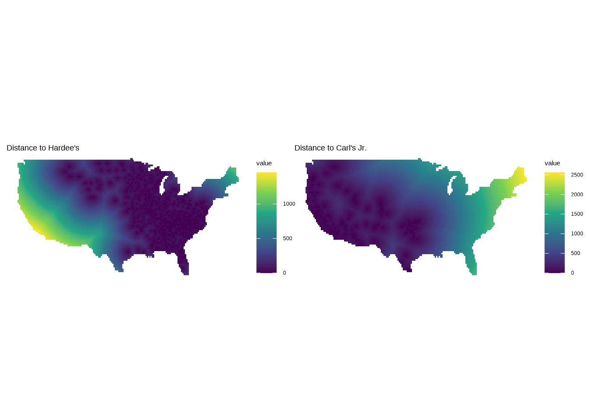
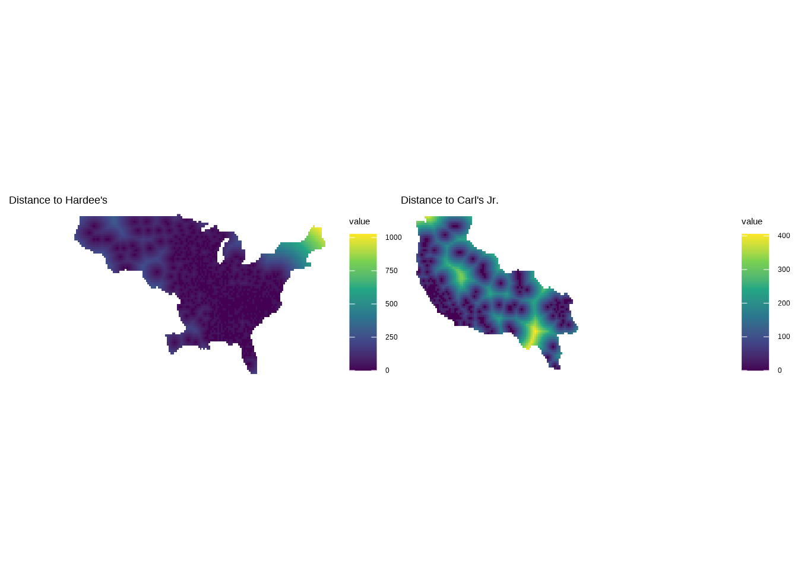

The topic for day 15 was food. If you’ve ever driven across the country, you may have had the Mandela-effect like feeling when you come across a Hardee’s or Carl’s Jr. They seem almost exactly the same: similar fonts, same smiling little star, and identical menus. But they are conceivably different restaurants? Long story short, they merged nearly twenty years ago, and kept the franchise names to not disrupt the markets and fan bases on their respective coasts. Essentially, it’s the second-most famous East vs. West coast beef, and I wanted to make a map of the dividing line based on distance to the nearest Hardee’s or Carl’s Jr.
I used data from fastfoodmaps.com to get the location of all the restaurants, and then created rasters of Euclidean distance to each restaurant.
food.locs <-read.csv("fastfoodmaps_locations_2007.csv", header = F) |>#limit to just Hardee and Carls Jrfilter(V2 %in%c("c", "h")) |>#limit to just continentental USfilter(!(V5 %in%c("HI", "AK"))) |>select(V2, V8, V9) food.sf <-st_as_sf(food.locs, coords =c("V9", "V8"), crs =4326)#create raster templateusa.poly <-st_as_sf(maps::map("usa", fill=TRUE, plot =FALSE)) |>filter(ID =="main")usa.bbox <-st_bbox(usa.poly)#a finer resolution will make distance calculations take longerus.rast <-rast(crs ="epsg:4326", resolution =0.33333, xmin = usa.bbox$xmin, xmax = usa.bbox$xmax, ymin = usa.bbox$ymin, ymax = usa.bbox$ymax)values(us.rast) <-1dist.h.base <-distance(x = us.rast, y =vect(filter(food.sf, V2 =="h")))dist.c.base <-distance(x = us.rast, y =vect(filter(food.sf, V2 =="c")))dist.h.base <- dist.h.base/1000dist.c.base <- dist.c.base/1000p1 <-ggplot() +geom_spatraster(data =mask(dist.h.base, vect(usa.poly))) +ggtitle("Distance to Hardee's") +scale_fill_viridis_c(na.value =NA) +theme_void()p2 <-ggplot() +geom_spatraster(data =mask(dist.c.base, vect(usa.poly))) +ggtitle("Distance to Carl's Jr.") +scale_fill_viridis_c(na.value =NA) +theme_void()p1 + p2

I then wanted mask out those pixels where the other restaurant was closer, essentially trying to create a raster for each side of the United States. I did this using some simple raster logic, where any pixels where the other restaurant was closer became NA.
#create raster to identify which is closesth.closer <- dist.h.base<dist.c.basedist.c <- dist.c.basedist.h <- dist.h.basedist.c[h.closer] <-NAdist.h[!h.closer] <-NA#mask so it is just US outlinedist.c.mask <-mask(dist.c, vect(usa.poly))dist.h.mask <-mask(dist.h, vect(usa.poly))p1 <-ggplot() +geom_spatraster(data = dist.h.mask) +ggtitle("Distance to Hardee's") +scale_fill_viridis_c(na.value =NA) +theme_void()p2 <-ggplot() +geom_spatraster(data = dist.c.mask) +ggtitle("Distance to Carl's Jr.") +scale_fill_viridis_c(na.value =NA) +theme_void()p1 +p2

The last bit of spatial data creation I did was the creation of the dividing line between the two rasters. There are many ways to do this, but these are the steps I followed:
created a polygon that represented the outline of all non-NA values in each raster using as.polygons
created a buffer around that polygon via st_buffer
identified the overlap between the two buffered polygons using st_intersection
#define some things outside of the plot call for easier readabilitybg.col <-"gray10"fact.caption <-"Hardee's and Carl's Jr. merged in 1997. The menu is now the same, but which one you eat at depends on where you live."caption.lab <-paste0("#30DayMapChallenge ","<b> Source: </b>fastfoodmaps.com | ","<span style='font-family:fa-brands;'></span> mvevans89")
ggplot() +geom_spatraster(data = dist.h.mask) +scale_fill_distiller(palette ="Blues", na.value =NA, name ="Distance to Hardee's") + ggnewscale::new_scale_fill() +geom_spatraster(data = dist.c.mask) +scale_fill_distiller(palette ="Reds", na.value =NA, name ="Distance to Carl's Jr.")+geom_sf(data = boundary, color ="black", fill ="white") +labs(title ="A Nation Divided",caption = caption.lab) +annotate(geom ="text", x =-120, y =27, label = stringr::str_wrap(fact.caption, 35),col ="white", size =4) +geom_richtext(aes(label ="<img src='carls.png' width='80'/>", x =-110, y =35), fill =NA, color =NA) +geom_richtext(aes(label ="<img src='hardees.png' width='80'/>", x =-85, y =38), fill =NA, color =NA) +theme_void() +theme(legend.position ="bottom",panel.background =element_rect(fill = bg.col, color =NA),plot.background =element_rect(fill = bg.col, color =NA),legend.background =element_rect(fill = bg.col, color =NA),legend.text =element_text(color ="white"),legend.title =element_text(color ="white"),plot.caption =element_markdown(family ="sans", hjust =0.5, size =9,color ="gray80"),plot.title =element_text(color ="white", size =24, hjust =0.5),legend.direction ="horizontal")